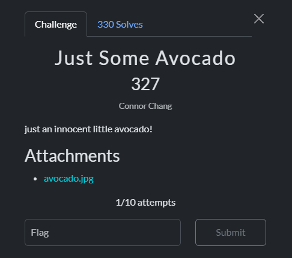
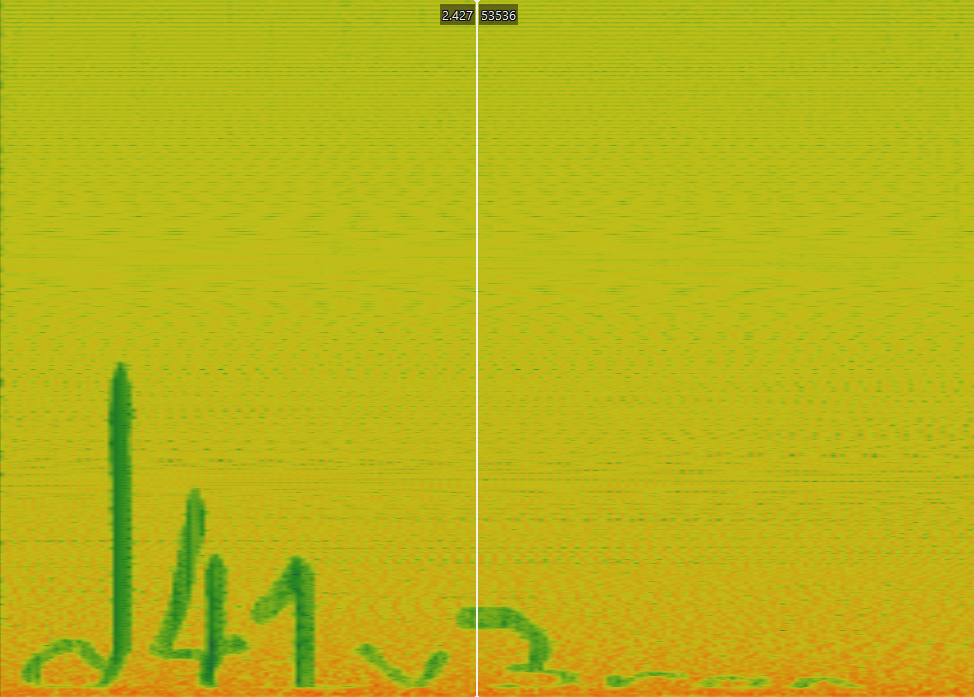

Just Some Avocado - scriptCTF 2025

Category: Forensics
Author: yash
Introduction
The provided JPEG image (avocado.jpg) contained a hidden encrypted ZIP file and a WAV audio file.
The goal was to extract all hidden files, analyze the audio for hidden data, and retrieve the final flag.
The Journey to the Flag
Step 1: Initial Recon
We first check the file for hidden content using strings and binwalk.
$ strings avocado.jpg
# Output shows some embedded ZIP filenames hints
...
.S=w
U2NdA
justsomezip.zipUT
1[hux
staticnoise.wavUT
4\hux
$ binwalk avocado.jpg
DECIMAL HEXADECIMAL DESCRIPTION
0 0x0 JPEG image data, JFIF standard 1.01
100599 0x188F7 Zip archive data, encrypted at least v1.0, name: justsomezip.zip
100922 0x18A3A Zip archive data, encrypted at least v2.0, name: staticnoise.wav
509321 0x7C589 End of Zip archive
Observation: There is an encrypted ZIP and a WAV file embedded inside the image.
Step 2: Extract First ZIP
We use binwalk extraction:
$ binwalk -e avocado.jpg
# Extracted _avocado.jpg.extracted/188F7.zip
# ZIP is password-protected
Attempting to unzip shows a password prompt:
$ unzip 188F7.zip
[188F7.zip] justsomezip.zip password:
We need to crack the password to proceed.
Step 3: Crack ZIP Password
Using a wordlist (rockyou.txt) and fcrackzip:
$ fcrackzip -u -D -p rockyou.txt 188F7.zip
PASSWORD FOUND!!!!: pw == impassive3428
Extracting with the password gives the inner ZIP and the WAV file:
$ unzip -P impassive3428 188F7.zip
extracting: justsomezip.zip
extracting: staticnoise.wav
Step 4: Analyze WAV File
Check file type and metadata:
$ binwalk staticnoise.wav
# RIFF audio data, PCM, 2 channels, 22050 Hz
$ file staticnoise.wav
staticnoise.wav: RIFF (little-endian) data, WAVE audio, Microsoft PCM, 16 bit, stereo 22050 Hz
Listening revealed gradually decreasing noise → indicates hidden data in spectrogram. Using Sonic Visualiser, we split channels and generated a spectrogram:

Analysis of the spectrogram revealed the hidden password:
Step 5: Extract Final ZIP and Retrieve Flag
$ unzip -P d41v3ron justsomezip.zip
# extracting: flag.txt
$ cat flag.txt
scriptCTF{1_l0ve_d41_v3r0n}
FLAG
scriptCTF{1_l0ve_d41_v3r0n}